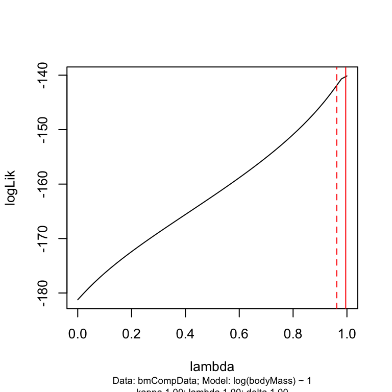
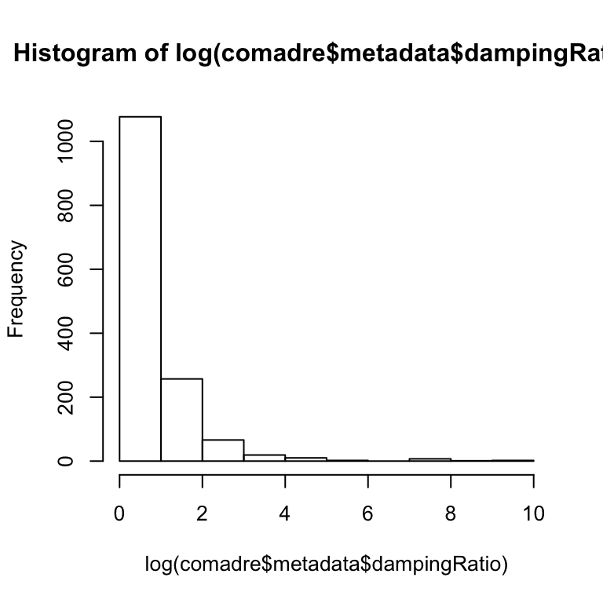
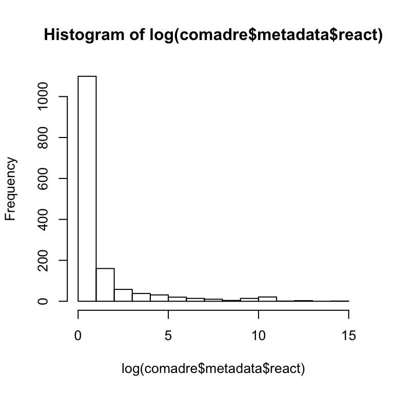
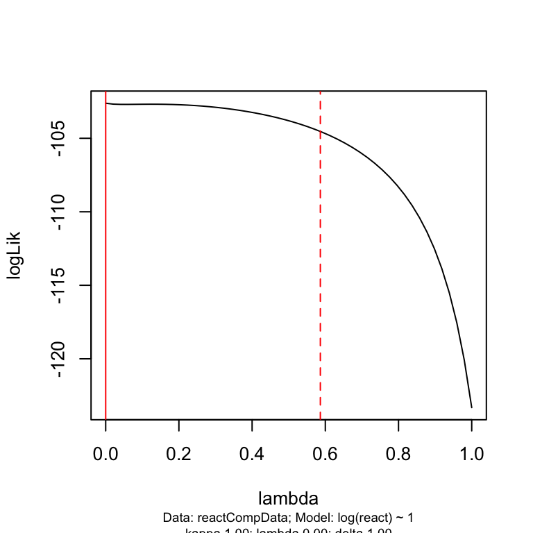
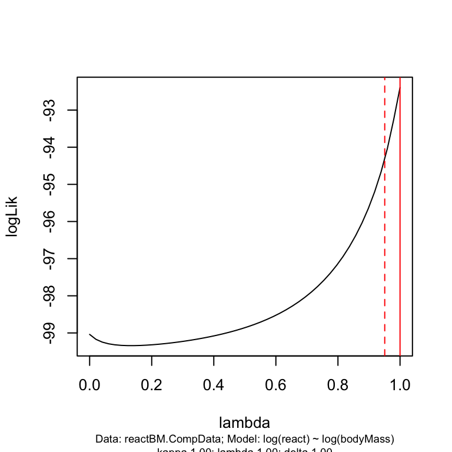
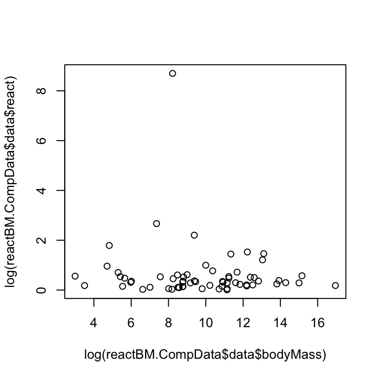

Signal in demographic traits
Let’s estimate signal in some demographic traits.
I will illustrate how to do this using mammals.
Import the mammal tree. The mammalian supertree is in a Nexus file. It will be loaded as a multiPhylo object with 3 trees (bestDates, lowerDates, upperDates). I will use the bestDates tree.
mammalTree <- read.nexus("data/mammalsupertree.nex")
mammalTree <- mammalTree$mammalST_bestDates
summary(mammalTree)
#>
#> Phylogenetic tree: mammalTree
#>
#> Number of tips: 4510
#> Number of nodes: 2108
#> Branch lengths:
#> mean: 10.18057
#> variance: 77.94854
#> distribution summary:
#> Min. 1st Qu. Median 3rd Qu. Max.
#> 0.1 4.0 8.2 13.4 102.6
#> No root edge.
#> First ten tip labels: Tachyglossus_aculeatus
#> Zaglossus_bruijni
#> Ornithorhynchus_anatinus
#> Anomalurus_beecrofti
#> Anomalurus_derbianus
#> Anomalurus_pelii
#> Anomalurus_pusillus
#> Zenkerella_insignis
#> Idiurus_macrotis
#> Idiurus_zenkeri
#> No node labels.Because the COMADRE species name contains infraspecific names for some species, I first need to create a new vector in the metadata for the latin binomial.
comadre$metadata$binomial <- paste(comadre$metadata$GenusAccepted,"_",comadre$metadata$SpeciesEpithetAccepted,sep="")Now I can check how many species in COMADRE are actually in the phylogeny…
sum(mammalTree$tip.label %in% comadre$metadata$binomial)
#> [1] 76I can also check which species are in COMADRE that are not in the phylogeny…
COMADREmammalSp<-comadre$metadata$binomial[comadre$metadata$Class =="Mammalia"]
unique(COMADREmammalSp[which(!COMADREmammalSp %in% mammalTree$tip.label)])
#> [1] "Antechinus_agilis" "Bos_gaurus"
#> [3] "Brachyteles_hypoxanthus" "Callospermophilus_lateralis"
#> [5] "Clethrionomys_NA" "Felis_catus"
#> [7] "Gorilla_beringei" "Hystrix_refossa"
#> [9] "Lagothrix_lagothricha" "Lemmus_NA"
#> [11] "Microtus_NA" "Papio_cynocephalus"
#> [13] "Pongo_abelii" "Propithecus_edwardsi"
#> [15] "Lycalopex_culpaeus" "Urocitellus_armatus"
#> [17] "Urocitellus_beldingi" "Urocitellus_columbianus"Some of these may be synonyms and I could update the data to reflect this. Life is short though, so I’m not going to do that right now…
First, let’s look at the signal for body mass.
We’ll need to build a suitable data frame (this is the tricky part!) by adding weight information to the COMADRE metadata.
pantheria <- read.delim("data/PanTHERIA_1-0_WR05_Aug2008.txt",na.strings = "-999.00")
myData <- data.frame(binomial = pantheria$MSW05_Binomial, bodyMass = pantheria$X5.1_AdultBodyMass_g)
myData$binomial <- gsub(pattern = " ",replacement = "_",myData$binomial)
#newmd <- merge(comadre$metadata,myData,by="binomial",all.x=TRUE,sort = FALSE)
comadre$metadata$bodyMass <- myData$bodyMass[match(comadre$metadata$binomial,myData$binomial)]Now we need to subset the whole COMADRE object to only include the data in the tree, and where we have body mass information. In practice it is best to make a comparative.data object. This type of object combines both the data and the tree in a single object. It is best to subset the data to include only the columns you are interested in before making it.
#first make a body mass data.frame.
tempData <- unique(comadre$metadata[,c("binomial","bodyMass")])
bmCompData<-comparative.data(mammalTree,tempData,names.col = "binomial")Now I can fit a PGLS to estimate signal strength.
model1<-pgls(log(bodyMass)~1,data = bmCompData,lambda="ML")
summary(model1)
#>
#> Call:
#> pgls(formula = log(bodyMass) ~ 1, data = bmCompData, lambda = "ML")
#>
#> Residuals:
#> Min 1Q Median 3Q Max
#> -0.75411 -0.15910 -0.04799 0.12623 0.53961
#>
#> Branch length transformations:
#>
#> kappa [Fix] : 1.000
#> lambda [ ML] : 0.996
#> lower bound : 0.000, p = < 2.22e-16
#> upper bound : 1.000, p = 0.53644
#> 95.0% CI : (0.962, NA)
#> delta [Fix] : 1.000
#>
#> Coefficients:
#> Estimate Std. Error t value Pr(>|t|)
#> (Intercept) 9.1356 1.5850 5.7638 1.899e-07 ***
#> ---
#> Signif. codes: 0 '***' 0.001 '**' 0.01 '*' 0.05 '.' 0.1 ' ' 1
#>
#> Residual standard error: 0.2667 on 72 degrees of freedom
#> Multiple R-squared: 0, Adjusted R-squared: 0
#> F-statistic: NaN on 0 and 72 DF, p-value: NA
plot(pgls.profile(model1))
One can address particular matrices in COMADRE (or COMPADRE) using the indexing functionality (square brackets).
comadre$mat[[24]]$matA
#> A1 A2 A3
#> [1,] 0.000000 1232.500 2805.00
#> [2,] 0.000465 0.145 0.00
#> [3,] 0.000000 0.145 0.33Let’s take a look at the signal strength for damping ratio - the speed of convergence to the stable age distribution. There is a function for this in both the popbio and popdemo packages. I will use the popbio version.
for(i in 1:nrow(comadre$metadata)){
A <-comadre$mat[[i]]$matA
comadre$metadata$dampingRatio[i]<-as.numeric(try(damping.ratio(A)))
}hist(log(comadre$metadata$dampingRatio))
Let’s now estimate signal in the damping ratio. Where there are more than one record per species I will take the mean.
tempData <- comadre$metadata[,c("binomial","dampingRatio")]
x<-tapply(tempData$dampingRatio,tempData$binomial,mean)
tempData<-data.frame(binomial = names(x), dampingRatio= as.vector(x))Some of the damping ratios are calculated to be infinite. I replace these with NA.
tempData$dampingRatio[tempData$dampingRatio == Inf] <- NA
drCompData<-comparative.data(mammalTree,tempData,names.col = "binomial")Now I can fit a PGLS model to estimate signal strength in damping ratio.
model1<-pgls(log(dampingRatio)~1,data = drCompData,lambda="ML")
summary(model1)
#>
#> Call:
#> pgls(formula = log(dampingRatio) ~ 1, data = drCompData, lambda = "ML")
#>
#> Residuals:
#> Min 1Q Median 3Q Max
#> -0.11936 -0.03141 0.01536 0.05115 0.14774
#>
#> Branch length transformations:
#>
#> kappa [Fix] : 1.000
#> lambda [ ML] : 0.000
#> lower bound : 0.000, p = 1
#> upper bound : 1.000, p = 4.155e-10
#> 95.0% CI : (NA, 0.379)
#> delta [Fix] : 1.000
#>
#> Coefficients:
#> Estimate Std. Error t value Pr(>|t|)
#> (Intercept) 0.739500 0.099988 7.3959 4.069e-10 ***
#> ---
#> Signif. codes: 0 '***' 0.001 '**' 0.01 '*' 0.05 '.' 0.1 ' ' 1
#>
#> Residual standard error: 0.06582 on 63 degrees of freedom
#> Multiple R-squared: 0, Adjusted R-squared: 0
#> F-statistic: NaN on 0 and 63 DF, p-value: NAThis measure has a really low signal! This means that it would be extremely difficult to infer the value based on the value of similar species.
Try the same thing for reactivity
Reactivity is the first-timestep amplification which tells how fast a population could possibly grow (see Ezard et al.).
Again, I will loop through the matrices in COMADRE, then subset to the species of interest…
for(i in 1:nrow(comadre$metadata)){
A <-comadre$mat[[i]]$matA
comadre$metadata$react[i]<-as.numeric(try(reactivity(A)))
}hist(log(comadre$metadata$react))
Now I can estimate signal in reactivity. As before, where there is more than one record per species I will take the mean.
tempData <- comadre$metadata[,c("binomial","react")]
x<-tapply(tempData$react,tempData$binomial,mean)
tempData<-data.frame(binomial = names(x), react= as.vector(x))
reactCompData<-comparative.data(mammalTree,tempData,names.col = "binomial")Now I can fit a PGLS model to estimate signal strength in reactivity I can also look at the likelihood surface for the lambda (signal) estimate.
model1<-pgls(log(react)~1,data = reactCompData,lambda="ML")
summary(model1)
#>
#> Call:
#> pgls(formula = log(react) ~ 1, data = reactCompData, lambda = "ML")
#>
#> Residuals:
#> Min 1Q Median 3Q Max
#> -0.304321 -0.021488 0.008407 0.049554 0.305453
#>
#> Branch length transformations:
#>
#> kappa [Fix] : 1.000
#> lambda [ ML] : 0.000
#> lower bound : 0.000, p = 1
#> upper bound : 1.000, p = 1.2362e-10
#> 95.0% CI : (NA, 0.586)
#> delta [Fix] : 1.000
#>
#> Coefficients:
#> Estimate Std. Error t value Pr(>|t|)
#> (Intercept) 0.63559 0.13777 4.6136 1.875e-05 ***
#> ---
#> Signif. codes: 0 '***' 0.001 '**' 0.01 '*' 0.05 '.' 0.1 ' ' 1
#>
#> Residual standard error: 0.09279 on 66 degrees of freedom
#> Multiple R-squared: 0, Adjusted R-squared: 0
#> F-statistic: NaN on 0 and 66 DF, p-value: NA
plot(pgls.profile(model1))
This measure also has a really low signal!
The question is, are there demographic traits with high signal? Can signal be useful?
Accounting for phylogenetic signal in regular regressions
tempData <- comadre$metadata[,c("binomial","react","bodyMass")]
x<-tapply(tempData$react,tempData$binomial,mean)
y<-tapply(tempData$bodyMass,tempData$binomial,mean)
tempData<-data.frame(binomial = names(x), react= as.vector(x),bodyMass=as.vector(y))
head(tempData)
#> binomial react bodyMass
#> 1 Accipiter_cooperii 1.824557 NA
#> 2 Accipiter_gentilis 1.831791 NA
#> 3 Acinonyx_jubatus NaN 50577.92
#> 4 Acipenser_fulvescens 15499.206195 NA
#> 5 Acipenser_transmontanus 48266.726588 NA
#> 6 Acropora_hyacinthus 1.284970 NA
reactBM.CompData<-comparative.data(mammalTree,tempData,names.col = "binomial")
model1<-pgls(log(react)~log(bodyMass),data = reactBM.CompData,lambda="ML")
summary(model1)
#>
#> Call:
#> pgls(formula = log(react) ~ log(bodyMass), data = reactBM.CompData,
#> lambda = "ML")
#>
#> Residuals:
#> Min 1Q Median 3Q Max
#> -0.56137 -0.10072 -0.01734 0.04024 0.46296
#>
#> Branch length transformations:
#>
#> kappa [Fix] : 1.000
#> lambda [ ML] : 1.000
#> lower bound : 0.000, p = 0.00026638
#> upper bound : 1.000, p = 1
#> 95.0% CI : (0.951, NA)
#> delta [Fix] : 1.000
#>
#> Coefficients:
#> Estimate Std. Error t value Pr(>|t|)
#> (Intercept) 0.180217 1.216471 0.1481 0.8827
#> log(bodyMass) 0.043915 0.074896 0.5863 0.5598
#>
#> Residual standard error: 0.167 on 62 degrees of freedom
#> Multiple R-squared: 0.005515, Adjusted R-squared: -0.01053
#> F-statistic: 0.3438 on 1 and 62 DF, p-value: 0.5598
plot(pgls.profile(model1))
plot(log(reactBM.CompData$data$bodyMass),log(reactBM.CompData$data$react))